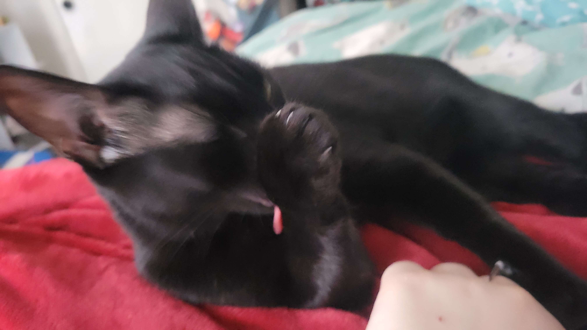

Onyx is a small black cat that was adopted along with GiGi. He is very sweet and very affectionate, and a lot more outgoing than GiGi. Despite his sweetness, he has sharp claws and does not seem to understand that digging them into peoples skin hurts (or he just does not care), but as long as you can avoid the claws, shes extremely friendly.
